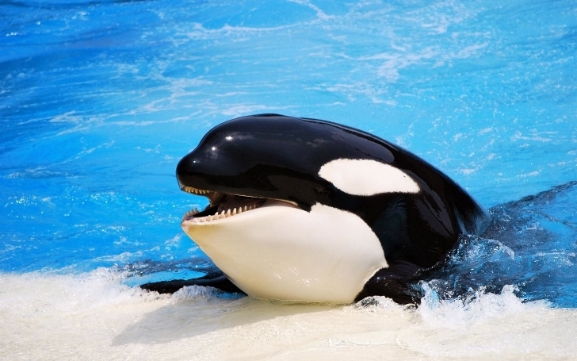

범고래= 지금까지 우리가 육지에 대해 얘기를 했으면 이제는 바다, 해양에 대해서 얘기하는 것이 좋겠다. 많은 사람들은 상어가 바다의 최강자라고 생각할 것이다. 그러나 그것은 큰 착각이다. 상어는 범고래에게는 그저 한개의 장난감 수준이다. 범고래는 매우 포악한 동물이다. 그들은 항상 배고픔에 굶주리고 있고 사냥을 해도 미친듯이 던지고 때리고 치며 기절시킨 뒤 톱니 같은 이로 갈기갈기 찢어 큰 부상을 남기고 살짝 자리를 떠난 뒤 다시 와 먹어버린다. 범고래는 상어보다 이도 작고 대형 고래같은 몸집도 아니지만 잔인한 기술로 상대를 속이는 것에 높이 평가받고 있다. 또한 그들은 동물원에서 자신의 보호자도 먹고 관중들에게도 날아가 먹는다. 그리고 범고래가 다른 큰 동물원으로 옮겨지는 과정에서 범고래는 스스로 밧줄을 끊어 사람들을 깔아 뭉개고 혼자 말라 자살했다.
